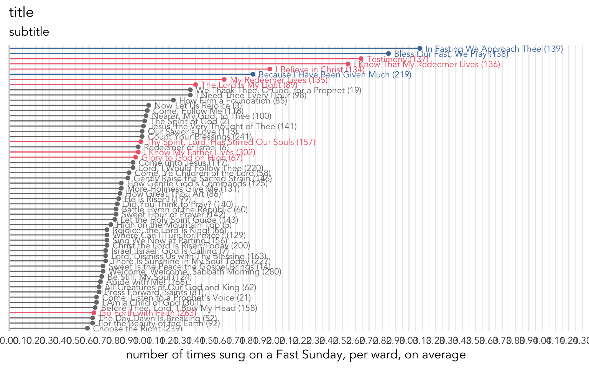
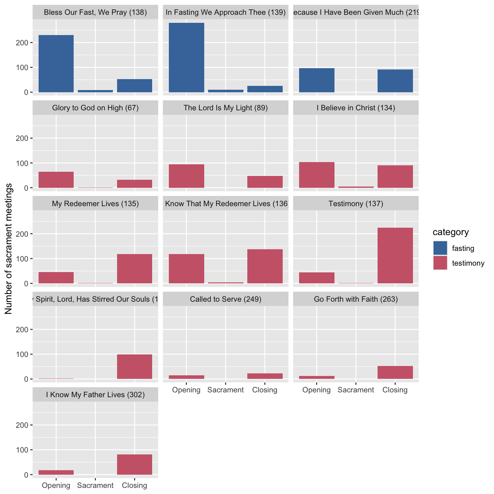

What hymns are sung around Fast Sunday?
holidays
frequency
In this post, I take a look at what hymns are sung on Fast Sundays.
Note
Methodologically, it’s a little tricky to actually filter out just the Fast Sundays. They’re on the first Sunday of the month, unless there’s a reason to move them. They get shifted around because of General Conference, often to the last Sunday in March and September but it depends on the stake I think. And in January, they are sometimes shifted a week later because of New Year’s Day. Plus, individual wards or stakes may move things around to accommodate for ward or stake conferences.
So, for this blog post, I’ll analyzed data from the first Sundays of the month, plus the last Sundays in March and September to account for General Conference. (I forget if Fast Sunday typically comes before General Conference or after, but I think it’s more often before.) As you’ll be able to see throughout this post, the results seem alright even though it’s not perfect. With that methodological caveat in mind, this post is based on the 4,115 sacrament meetings I have data from that fit that description. Please see this post for a more detailed breakdown of the data by time and state/country.
What hymns are most often sung on Fast Sunday?
If you look through the Topics index at the back of the hymnal, the two most relevant entries are “Fasting” and “Testimony.” There are just three fasting hymns:
Let’s see if these twelve hymns are indeed sung more during Fast Sunday. Figure 1 shows what hymns are the most common on the Fast Sundays. These results are perhaps rather unsurprising. The three fasting hymns, highlighted in blue, are in the top five. Five of testimony hymns are in the the top nine. (The fact that
The testimony hymns that were not particularly common on first Sundays are
Of course
What is most surprising to me from Figure 1 is that these hymns are not more popular than they already are. Some hymns are sung more generally, such as
Now, that’s just one hymn. If we look at all three of the fasting hymns collectively, do we see more wards singing them? Again, surprisingly not. It looks like about 84.3% of Fast Sundays in my data don’t have any of the three fasting hymns. 14.7% do, which again, seems low to me. 0.9% actually had two of them. This again, is perhaps the most surprising thing in this blog post: fasting hymns are just not that common—even on Fast Sunday.
If we expand our list to include testimony hymns, the picture is a little different. This time, 62.5% of Fast Sundays don’t have either fasting or testimony–themed hymn. 28.8% have one, 8.6% have two, and four meetings total have three. So still, in the minority. I reran the numbers after excluding the last Sundays in March and September and they were hardly any different. So, it seems like no matter how I look at it, it is more common to not see any Fast and Testimony hymns in Fast and Testimony meetings than it is to see them.
The Most Fasty and Testimony-y Hymns
So, while none of these hymns are particularly common, we can see which ones are the most quintessentially Fasty and Testimony-y. We can quantify this by comparing how often they’re sung on Fast Sundays and compare them to how often they’re sung on any other Sunday. We would expect a hymn about Fasting to be sung most of the time on Fast Sunday and hardly ever elsewhere. If we divide these two numbers, we can get a ratio. Anything greater than 1 means it’s more common on Fast Sundays while anything less than 1 means it’s more common on other Sundays.
Table 1 shows these numbers for the Fast and Testimony hymns. We can see that while 1 / 0.4 =) 2.5 times less likely to be sung on a Fast Sunday than on another Sunday. 1
1 Presumably, that one is more common on missionary farewells or homecomings or even missionary work–themed sacrament meetings, which are typically not Fast Sundays so that the missionary or other people can give a proper talk.
| Hymn | Times More Likely on Fast Sundays |
|---|---|
| In Fasting We Approach Thee (#139) | 20.5 |
| Bless Our Fast, We Pray (#138) | 15.0 |
| Testimony (#137) | 9.1 |
| My Redeemer Lives (#135) | 3.6 |
| Thy Spirit, Lord, Has Stirred Our Souls (#157) | 2.6 |
| I Know That My Redeemer Lives (#136) | 2.2 |
| I Believe in Christ (#134) | 1.7 |
| Glory to God on High (#67) | 1.6 |
| I Know My Father Lives (#302) | 1.5 |
| Because I Have Been Given Much (#219) | 1.5 |
| The Lord Is My Light (#89) | 1.2 |
| Go Forth with Faith (#263) | 0.8 |
| Called to Serve (#249) | 0.4 |
So, while these hymns are not too commonly sung on Fast Sundays, they’re rather rare otherwise. Another way of looking at it is with probabilities: the odds of singing a fasting hymn given that it’s a Fast Sunday is not too high, but the odds of it being a Fast Sunday given that you’re singing a fast or testimony hymn is quite high.2 This gives these the sense of being strongly associated with Fast Sundays even though they’re not sung every month.
2 i.e. P(fasting hymn | Fast Sunday) is small, but P(Fast Sunday | fasting hymn) is large.
Sacrament hymns
Okay, so we’ve looked at fast and testimony–themed hymns, but what about the sacrament hymn? Do people do anything different on Fast Sundays when choosing sacrament hymns?
There are two hymns that might be a little more common,
In general though, the correlation between how often a hymn is sung on Fast Sundays compared to the rest of the year is quite high (0.968), meaning it doesn’t matter whether it’s Fast Sunday or not, the selection of the sacrament hymn is the same either way.
Other times in the meeting
Finally, let’s look at those hymns about fasting or testimonies, and see when during the meeting they’re sung. In other wards, are they more common as opening hymns, intermediate hymns, or closing hymns?
Figure 2 shows these hymns, split up by how often they’re sung during the meeting. For some hymns, there is a pretty clear pattern. For example, the two hymns that are more explicitly about fasting,

Summary
We have Fast and Testimony meting every month, and there are some differences in the hymns that we sing. The three Fasting hymns that show up in the topical guide and some of the 11 testimony hymns are the most commonly sung hymns. However, only about one in every three or four wards sing one of these hymns on any given Fast Sunday, so it’s not an overwhelming trend. The hymns we see most likely on Fast Sunday and not during other weeks are also the ones that are most common: